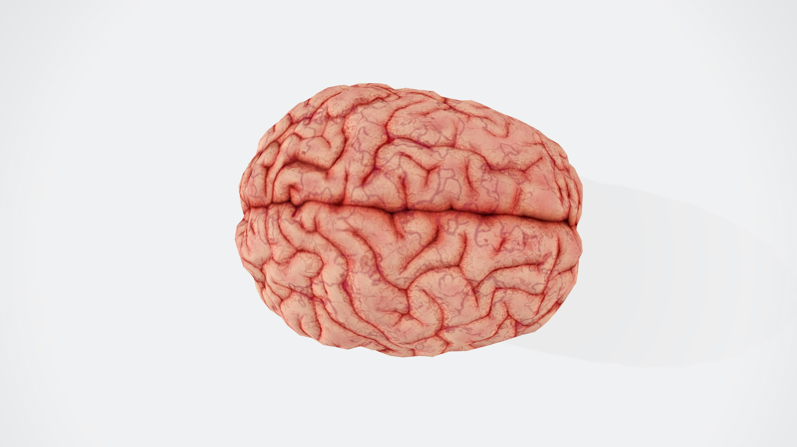
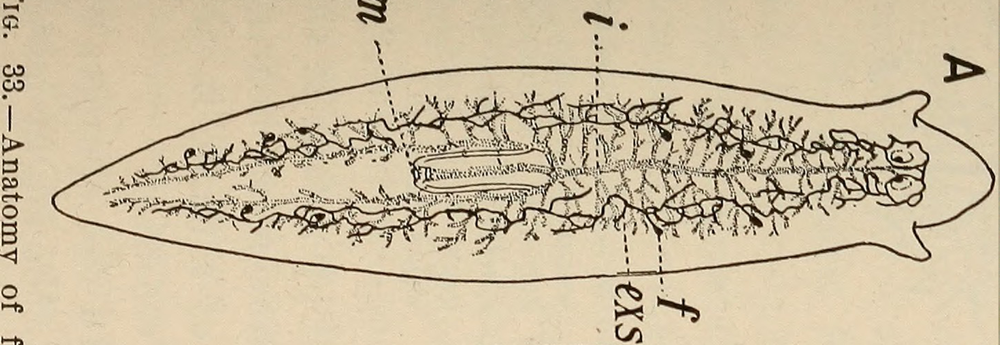
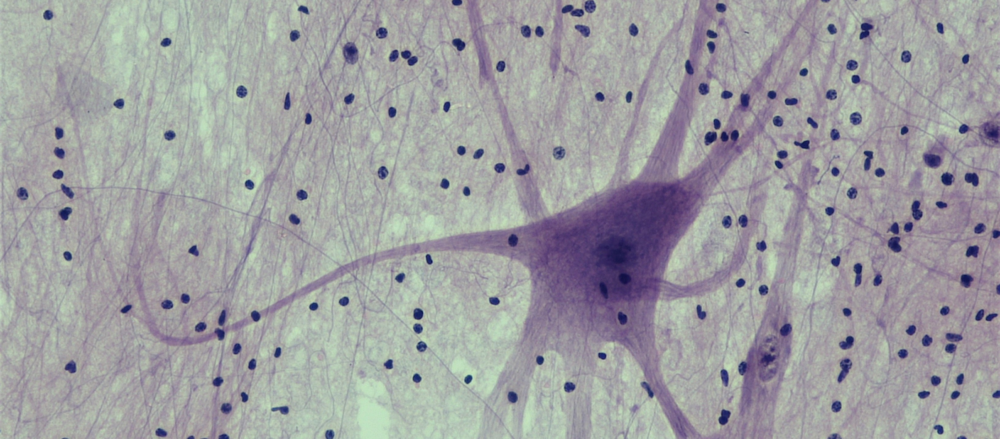

How neurons create such sophisticated experiences is not very well known so far. To understand how, there are a couple of techniques scientists can look into. Researching the current nervous system is one of them. The other is trying to observe its past. Looking into how and why the advancements occurred can help us understand the reason for current structures and their roles. This is similar to learning about the childhood or the era of a writer to understand their book better. In this case, the writer is evolution, and the book is neurons.
Defining the Nervous System
Everyone has an image of the nervous system in their mind. It most probably includes branching structures or the brain in general. Putting it into words is a lot trickier. In general, we accept that neurons are cells that send electrical signals to other sets of neurons (not exclusively). When we are looking for the first neuron, this is the idea we are searching for.
Nothing Comes First
First, there were no neurons. Communication between cells was purely chemical. Sponges, for example, are animals that lack a nervous system. When they need to react to something, they do this using their normal cells or synaptic proteins and ion channels that mimic neurons. The chemicals trigger other chemicals in the body.
For example, when a sponge is disturbed, it triggers the cells around the water canals to contract by the diffusion of molecules into the cells. This shows that the kingdom Animalia doesn’t depend on the nervous system to exist.
Nerve Nets
Then, we observe nerve nets being formed. These differ from the nervous system in the sense that they are spread out through the entire body. There are no clusters, like the brain in humans. They are far from being an organ. Phylum Cnidaria, including corals, jellyfish, and hydra, have these neural structures that resemble a web. It makes sense that so far we haven’t observed a single neuron in any of these animals. For neurons, teamwork makes the dream work. So what we expect to see is exactly a nerve net, because that is what would succeed more in the survival race. This raises the question of how the first neuron evolved and multiplied in the body. It probably originated from already existing cells, but what steps did these cells go through to become an established nervous system? What other roles did these original cells have and how did they lose these roles? These are questions waiting to be answered.
Ganglia
The next step we observe is something we call "cephalization." Cephal means head, so we are basically talking about the “headalization” of the nervous system. This happens when neurons cluster together rather than being spread out. These clusters are also called ganglia. One benefit of ganglia is that they create a faster response. This is mostly due to neurons being able to communicate with each other more efficiently without waiting for signals to reach one another.
Also, cephalization creates a type of hierarchy, where now there is a center that controls the other neurons. This allows decision-making and creates space for memory and skills. Flatworms are an example of this. In their nervous system, the accumulation of neurons in a specific region (cerebral ganglia) is easily identifiable.
An interesting fun fact is that bilateral symmetry emerges with cephalization in nature. Bilateral symmetry means the organism can be divided into two pieces that are symmetric to each other. Humans have bilateral symmetry, along with most animals. This is why the Half Man Half Woman act can exist.
The reason these two things go hand in hand is that bilateral symmetry leads to a head and a bottom part. If a snake’s head wasn’t at the tip, it would be a lot harder for it to move, similar to other animals that live on all fours. It wouldn’t see what was in front of it and would be eaten or crash into things. If bilateral symmetry and direction of movement exist in the body (which is usually the case), then cephalization is inevitable.

Dorsal Nerve Cord
The next step in evolution is the development of the dorsal nerve cord. Dorsal means on the back, so dorsal nerve cord implies the thick rope of neurons running from your neck to your lower body parts, along with supporting cells and protective tissue. This later develops into the spinal cord in humans and some other animals. This is the common feature of all vertebrates and phylum Chordata. Even the word Chordata comes from the cord.
The thickening of this rope implies that communication between the body and the brain has strengthened. Thus, the brain becomes the single point of control that is aware of the whole body and has enough information to direct it properly.
Fun fact, before the evolution of the dorsal nerve cord, we observe ventral nerve cords. This implies that at some point, one of our nincompoop ancestors rolled over and started living upside down.
The Human Brain
Now let’s get into the part that you are probably most interested in. The human brain is not so different from other animals. The sections such as the hindbrain, midbrain, and forebrain all exist in most vertebrates. The difference lies in many debated concepts.
One example of this is that humans have one of the largest EQs. EQ refers to Encephalization Quotient, which is a way of comparing brain size to body size. Brain size across animals doesn’t increase with body size the way you’d expect. Our brains are quite large compared to our body size, which is thought to be one indication of intelligence.
Homo sapiens has the largest EQ across all species with an EQ of 6.56. A blue whale, for example, has an EQ of 0.38. The problem with this measurement is that we don’t know if the increase in body size is proportional to the increase in brain size. If the body can grow larger faster than the brain, EQ would lose its meaning. Maybe rather than brain size, blue whales close the gap by having more connections, or maybe just a little more neurons are enough to direct a good portion of the body.
Still, EQ is good at showing that humans have a brain larger than average. Compared to other primates of similar size, our brains are much bigger, showing a strong correlation between cognitive abilities and brain size.
Further, we know that the prefrontal cortex of the human brain is larger. The neural connections in the brain can be argued to be more precise and valuable compared to other animals. Even though we don’t have the greatest number of neurons, the number of neurons we have in the frontal cortex is higher than in most animals. This area is linked with human-pioneered cognitive abilities such as language, problem-solving, reasoning, and logic.
So, it’s not like we have the biggest brain or the greatest number of neurons. Our brain is just designed more efficiently and compatibly with its purpose.
Long Story Short
Your brain has been forming for hundreds of thousands of years, and this is an explanation of that timeline in 1,384 words. If we could dig deeper and learn about the trillions of small genetic changes that occurred to create the human brain, the environments where those changes happened, the probability of them occurring, the conditions required for them to persist, and the number of times they had to occur because the mutant died in an unfortunate way, we would have an unimaginable amount of important information.
These questions are crucial to understanding our own brain and how we perceive the world. Think about how helpful it would be if you could point to the exact genetic change that created or allowed consciousness.
Whether or not we know how we got here, it is still impressive. If the first sponge could be aware of what it was part of, I think it would be quite mesmerized.
